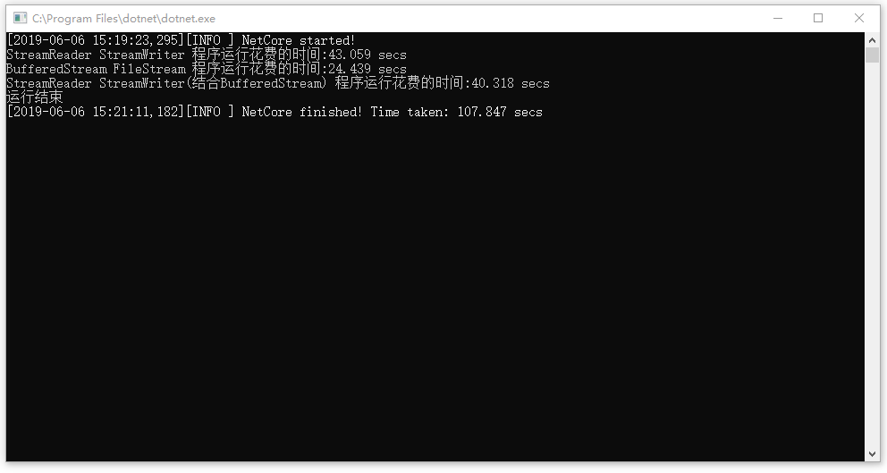
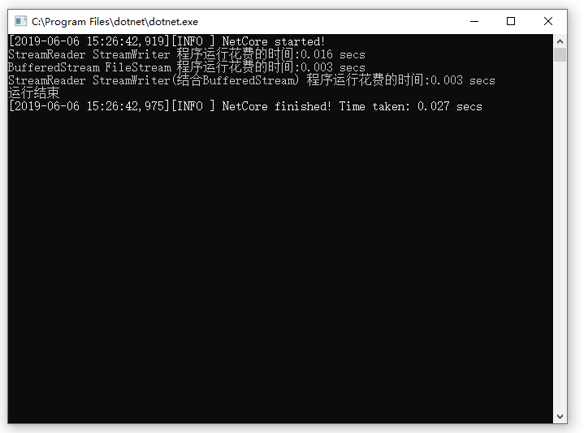

有些时候需要读取文件，小文件的时候效率的影响可以忽略，但是当文件上M，上G的时候，这个时候，效率问题就非常重要了，下面将对一个3G的文件，用C#的方式读取，对比效率的影响。
1. FileStream对象表示在磁盘或网络路径上指向文件的流，操作的是字节和字节数组，可以用于任何数据文件，而不仅仅是文本文件，也可以读取类似图像和声音的文件
2. BufferedStream类主要用来处理流数据的，减少某些流直接操作存储设备的时间，提高读写效率，也可以读取字节，当读取文件的时候，用字节读取有可能会把字符分开，最后转换而成的字符可能就有问题。
3. StreamReader，StreamWriter 类操作的是字符数据，一般用于读写文件
#FileMode
1. Create：创建新文件；如果存在这样的文件，将重写
2. CreateNew：创建新文件，但是如果已经存在此文件，则抛出异常
3. Open：打开现有的文件，但是不存在所指定的文件，则抛出异常
4. OpenOrCreate：如果文件存在，则规定打开文件，否则就创建新文件
5. Truncate：打开现有文件，清除其内容
6. Append：如果文件存在，就打开文件，将文件位置移动到文件的末尾，否则创建一个新文件。
以下代码是在.net core环境下运行的
Stopwatch watch = new Stopwatch();
watch.Restart();
using (StreamWriter newFile = new StreamWriter(@"D:\gitPublic\NetFrameTest\NetFrameTest\NetCore\big4.txt"))
using (StreamReader reader = new StreamReader(@"D:\gitPublic\NetFrameTest\NetFrameTest\NetCore\test.txt"))
{
string line;
while ((line = reader.ReadLine()) != null)
{
newFile.WriteLine(line);
}
}
watch.Stop();
Console.WriteLine($"StreamReader StreamWriter 程序运行花费的时间:{(double)watch.ElapsedMilliseconds / 1000:0.000} secs");
watch.Restart();
int length = 2048;
byte[] array = new byte[length];
int bytesRead = 0;
using (FileStream fileStream = new FileStream(@"D:\gitPublic\NetFrameTest\NetFrameTest\NetCore\test.txt", FileMode.Open))
using (FileStream newFile = new FileStream(@"D:\gitPublic\NetFrameTest\NetFrameTest\NetCore\test5.txt", FileMode.Create))
using (BufferedStream bufferedStream = new BufferedStream(fileStream))
{
while ((bytesRead = bufferedStream.Read(array, 0, length)) > 0)
{
if (bytesRead == length)
newFile.Write(array);
else
newFile.Write(array, 0, bytesRead);
}
}
watch.Stop();
Console.WriteLine($"BufferedStream FileStream 程序运行花费的时间:{(double)watch.ElapsedMilliseconds / 1000:0.000} secs");
watch.Restart();
using (FileStream fileStream = new FileStream(@"D:\gitPublic\NetFrameTest\NetFrameTest\NetCore\test.txt", FileMode.Open))
using (StreamWriter newFile = new StreamWriter(@"D:\gitPublic\NetFrameTest\NetFrameTest\NetCore\test6.txt"))
using (BufferedStream bufferedStream = new BufferedStream(fileStream))
using (StreamReader reader = new StreamReader(fileStream))
{
string line;
while ((line = reader.ReadLine()) != null)
{
newFile.WriteLine(line);
}
}
watch.Stop();
Console.WriteLine($"StreamReader StreamWriter(结合BufferedStream) 程序运行花费的时间:{(double)watch.ElapsedMilliseconds / 1000:0.000} secs");没有读写文件的计算机性能
读写文件的时候计算机性能
当读写文件的时候，CPU和磁盘使用率提高，如果服务器经常读写文件的话，需要好的CPU和硬盘
3G的文件读写运行效率对比

小文件运行效率对比

对比以上结果，读取字节效率最高，增加BufferedStream的时候效率要比不增加的时候快